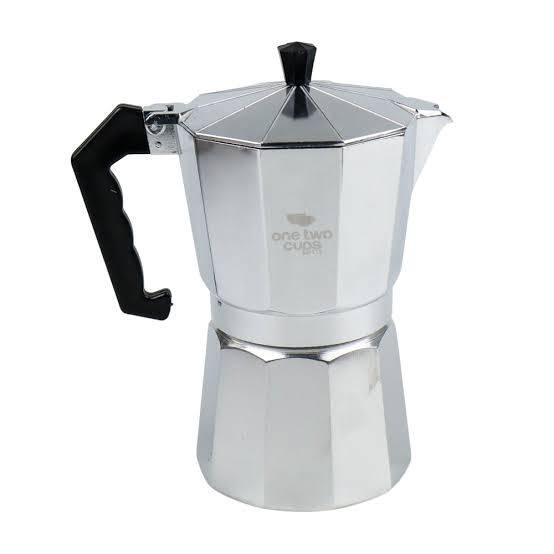
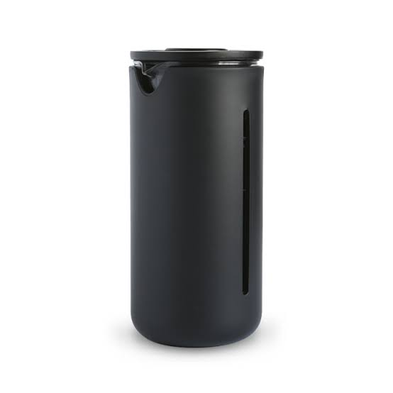
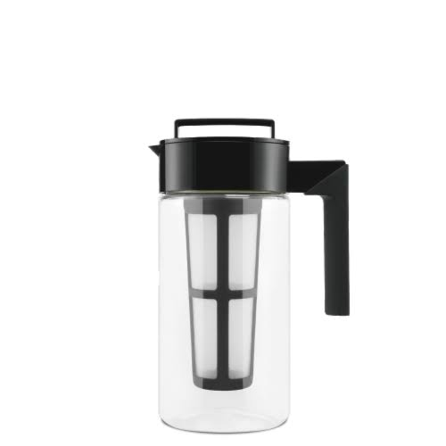
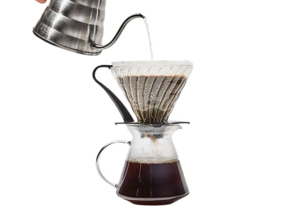
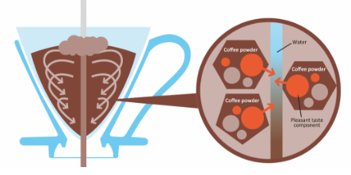
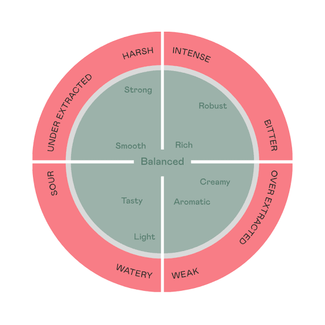

Berikut beberapa teknik berdasarkan eksperimen yang kami lakukan. Anda dapat bereksperimen sendiri dengan mengatur beberapa faktor.
Moka Pot

Moka pot adalah teknik menyeduh dengan melawan arah gravitasi. Memanfaatkan tekanan tersebut untuk menyeduh kopi yang memiliki profil hampir mirip dengan espresso.
a. Ukuran gilingan : Medium-fine
b. Suhu : 90 derajat Celcius
c. Rasio : 1:10
d. Teknik :
1. Siapkan alat dan air yang sudah mencapai suhu yang sesuai.
2. Masukkan air tersebut ke bagian bawah moka pot.
3. Letakkan moka pot di atas kompor dengan api kecil.
4. Amati moka pot, jangan biarkan mencapai suhu terlalu tinggi.
5. Sajikan.
French Press

French press adalah teknik immersion dengan merendam bubuk kopi lalu menekannya menggunakan sebuah alat.
a. Ukuran gilingan : Kasar atau medium
b. Suhu : 90 derajat Celcius atau lebih
c. Rasio : 1:15
d. Teknik :
1. Siapkan alat, bubuk, dan air yang sudah mencapai suhu yang sesuai.
2. Masukkan bubuk lalu air sesuai dengan rasio.
3. Tutup french press dan jangan ditekan terlebih dahulu, biarkan selama 4 menit.
4. Buka tutup lalu aduk perlahan dengan sendok.
5. Tutup kembali dan tekan french press.
6. Diamkan lagi selama 4 menit.
7. Sajikan.
Cold Brew

Cold brew adalah teknik perendaman bubuk kopi dalam air pada suhu ruangan yang kemudian ditempatkan dalam kulkas. Teknik ini menggunakan gilingan kasar dan membutuhkan waktu perendaman selama 12 hingga 24 jam.
a. Ukuran gilingan : Kasar
b. Suhu : Suhu ruangan
c. Rasio : 1:15
d. Teknik :
1. Siapkan alat dan bubuk kopi yang telah digiling kasar.
2. Masukkan bubuk kopi ke dalam wadah, lalu tambahkan air sesuai rasio.
3. Aduk perlahan hingga semua bubuk kopi terendam.
4. Tutup wadah dan simpan di dalam kulkas selama 12 hingga 24 jam.
5. Setelah perendaman selesai, saring kopi untuk memisahkan ampasnya.
6. Sajikan kopi dingin, bisa ditambahkan es batu jika diinginkan.
V60

V60 adalah teknik penyeduhan perkolasi yang serbaguna dan dapat dikreasikan. Resep ini menghasilkan kopi dengan profil seimbang antara asam, manis, dan pahit.
a. Ukuran gilingan : Medium fine - kasar
b. Rasio : 1:15
c. Teknik :
Fase Bloom
Gunakan suhu 85-90 derajat Celsius. Tuangkan 100 ml air selama 30 detik.
Fase 60%
Tetap gunakan suhu 85-90 derajat Celsius. Tuangkan air hingga total 300 ml dalam 1 menit 15 detik. Tuang perlahan dengan gerakan melingkar.
Fase Akhir
Turunkan suhu menjadi 70-80 derajat Celsius. Tuangkan sisa air 100 ml secara perlahan selama 30 detik hingga V60 penuh. Aduk perlahan. Biarkan hingga total waktu penyeduhan mencapai 3 menit.
V60 (Osmotic Flow)

V60 adalah teknik penyeduhan perkolasi yang serbaguna dan dapat dikreasikan. Resep ini menghasilkan kopi dengan profil yang cenderung asam dan manis alami.
a. Ukuran gilingan : Medium fine - kasar
b. Rasio : 1:15
c. Teknik :
Fase Bloom
Gunakan suhu 90-95 derajat Celsius. Tuangkan 100 ml air (maksimal 3 kali jumlah bubuk kopi) selama 30 detik.
Fase 60% (Teknik Tuang Sesuai Gambar)
Tetap gunakan suhu 90-95 derajat Celsius. Tuangkan air hingga total 300 ml (60% dari total air) dalam waktu sekitar 1 menit 30 detik, arahkan tuangan ke tengah kopi secara perlahan.
Fase Akhir
Turunkan suhu menjadi 70-80 derajat Celsius. Tuangkan sisa air 100 ml secara perlahan selama 30 detik hingga V60 penuh. Aduk perlahan. Biarkan hingga total waktu penyeduhan mencapai 3 menit 15 detik.
Dialing

Pembaca dapat bereksperimen dengan kopi Nusantara seperti Kopi Aceh, Bali, atau Sumatra. Perhatikan faktor-faktor berikut dan pengaruhnya terhadap hasil akhir kopi Anda. Faktor-faktor ini telah diuji oleh penulis dengan metode perbandingan rasa.
1. Temperatur
- Suhu di atas 90°C akan mengekstrak rasa pahit.
- Suhu di bawah 85°C akan mengekstrak rasa asam dan manis.
- Kopi dark roast dapat terekstrak pada suhu rendah, sementara light roast umumnya memerlukan suhu lebih tinggi.
2. Filtrasi
- Mesh filter menghasilkan profil bold.
- Paper filter menghasilkan rasa kopi yang clean. Perhatikan jenis paper filter yang digunakan.
3. Agitation
- Cara menuang air penting pada metode perkolasi.
- Tuangan air yang tidak merata akan menghasilkan kopi yang under-extract. Teknik kopi Osmotic menggunakan prinsip osmosis untuk ekstraksi.
4. Fase Bloom
- Blooming adalah proses pengeluaran gas CO2 dari kopi.
- Blooming dilakukan pada suhu relatif tinggi, sekitar 90°C ke atas.
5. Fase Ekstraksi
- Perhatikan hidrolisis, bagaimana air mengekstrak molekul pada kopi.
- Dissolution, pergerakan air pada bubuk kopi.
- Diffusion, tingkat konsentrasi air dan kopi.
6. Waktu Kontak
- Kontak antara air dan kopi sangat krusial.
- Ukuran gilingan yang terlalu kasar akan memperpendek waktu kontak.
- Ukuran gilingan yang terlalu halus akan menyebabkan channeling, berlaku untuk metode perkolasi.
Kolom Komentar
Jika ada komentar yang ingin dihapus, silakan hubungi email Admin.
suryawiranto@sdbsstudio.my.id